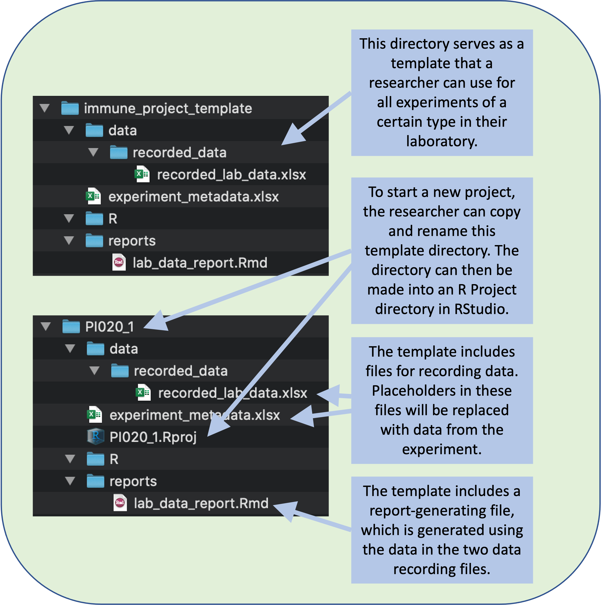
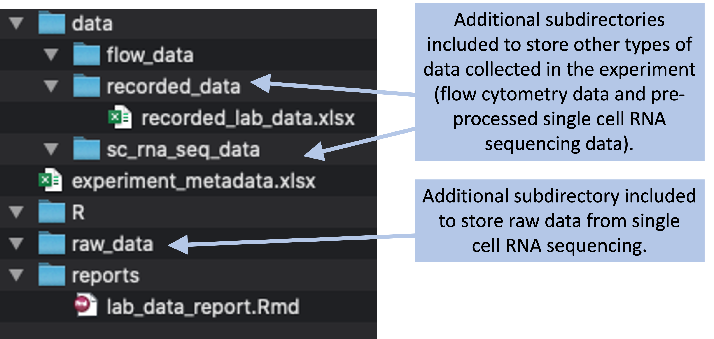

2.7 Creating project directory templates
Researchers can develop project directory templates to facilitate collecting research files in a single, structured directory, with the added benefit of easy use of version control. Researchers can gain even more benefits by consistently structuring all their project directories. We will demonstrate how to implement structured project directories through RStudio, as well as how RStudio enables the creation of a ‘Project’ for initializing consistently-structured directories for all of a research group’s projects.
Objectives. After this module, the trainee will be able to:
- Be able to designed a structured project directory template for research projects
- Understand how RStudio can be used to create ‘Project’ templates
The last module described the advantages of organizing all the files for a research project within a single directory, and the added advantages of using a consistent directory structure for all of the experiments or projects in your research group. In this module, we’ll walk through the steps required to design and create a template for your project directories. Creating and using a common template for your directory structure for projects will help create consistency across projects in the directory structure, which can facilitate the use and re-use of automated tools like code scripts across different experiments.
Designing a project template will include two parts—first, designing a conceptual template for your file organization and, second, creating a physical implementation of that concept. The conceptual template will develop a structure and rules for how you’ll organize and name files within a project directory. The physical template will use these ideas to develop a file directory that follows that organization, which you can then copy, paste, and adapt each time you start a new project.
The hardest part of this is the conceptual part—deciding on the structure and rules you will consistently use. This is a process of designing, and so you can make this process a bit easier by following principles that facilitate design. For example, as you design, it’s useful to start by defining the problem (Osann, Mayer, and Wiele 2020). What are you aiming to achieve with your file organization system?
Based on our own experiences and the advice of others (Marwick, Boettiger, and Mullen 2018; Bertin and Baumer 2021), some key goals to consider for a research project directory template are that the system:
- Keeps all files for a research project within a single directory, using subdirectories to organize files into a hierarchical structure
- Keeps data collection and analysis separate (see module 2.1)
- Avoids or removes unnecessary files
- Uses meaningful names for files and subdirectories, allowing easy navigation and discoverability (module 2.6) by a new user
- Facilitates creation of reports and analysis that incorporate data from different assays for an experiment
- Makes it easy to share all project files across the team, as well as publicly, once a paper is published
- Makes it easy to implement version control for a project (modules 2.9–2.11)
- Incorporates enough flexibility to be used with minimal changes across many research projects
In this module, we’ll walk through steps you can take to design project templates to meet these goals.
2.7.1 Designing a project template
Before you open your computer to make a “physical” template, you should design it. This involves deciding what types of data will go into a project directory, how those files will be organized within the directory and the naming conventions for files. In other words, you should create a blueprint for your template before you create a physical template.
As you work on this blueprint, you will want to prioritize how it will fit the needs of the user—your research group. One way you can do this is to follow a key early step in the design process: observe (Osann, Mayer, and Wiele 2020). One of the best ways to get an idea of what your research group needs within a project directory is to take a survey of past research projects from your group. Make a list of what types of data were collected and what types of pre-processing and analysis were done using those data. For each type of data, it’s helpful to make a note of the file type it’s usually stored in and the typical size of the files. How are data for a specific assay divided across files? Are the data for all animals and all timepoints included in a single spreadsheet file? If so, are they saved in the same sheet, or divided across sheets? Conversely, are different files used for the data from different animals or different time points?
Doing this kind of survey will help you create a standard structure of subdirectories that you can use consistently across the directories for all the projects in your research program. Of course, some projects may not include certain files, and some might have a new or unusual type of file, so you can customize the directory structure to some degree for these types of cases, but it is still a big advantage to include as many common elements as possible across all your projects. The best way to determine what these common elements might be in future projects is to look at your past projects.
It can also be helpful to have an example of each file type, to help capture the typical size, structure, and contents of each type of file. For data that you will record yourself, these can be the templates that you developed to collect the data in a tidy format (modules 2.3 through 2.5), while for data from equipment, these can be one or more example files from the equipment that you have collected for a past project. Having these example files will help you to develop a template project report that can input the type of data that you typically collect for this type of project.
This is also a good stage to diagnose if there are data collection files that are not successful in separating data collection from data pre-processing and analysis (module 2.1). As you progress, you may also want to add templates that serve as a starting point for data collection files and report files within this project. For example, if you always want to collect observed data in a standard way, you could create a template for data collection, for example as a CSV file. This idea of creating data collection templates is described in detail in modules 2.4 and 2.5.
Another type of template you may want to develop at this point is a report template. You can leverage the standard structure you’ve created for your directory to create a report. This can be designed to generate some exploratory analysis and visualizations that you find you typically want to generate from your data. You can create this using tools for reproducible reports—in R, a key tool for this is RMarkdown. Here, we’ll cover using this tool for creating a report briefly, but there are many more details in modules 3.7 through 3.9. Briefly, RMarkdown allows you to include both code and text meant for humans within a single, plain text document. This document can then be rendered, a process that executes the code and formats the text meant for humans, producing a document in an easy-to-read format like Word or PDF.
Determine which subdirectories you’ll include and how you’ll name them
Once you have surveyed past project to determine the types of files that you’ll normally include in a project, you can decide how to organize them into subdirectories. This subdirectory structure will create the core framework of your project directory template.
In general, as you design the structure of subdirectories, keep in mind that a key aim is to create a structure that is general enough that you can use it consistently for many projects, but also clear enough that you can quickly find things within the directory. As one paper notes, you want a directory setup that is “flexible and configurable” (Blischak, Carbonetto, and Stephens 2019).
You also want to design a structure that will be easy to work within. Adam Savage, the host of the Mythbusters television show who we introduced in module 2.3, has spent a lot of time thinking about how to organize a work space to make his process more efficient and pleasant. One interesting thing that he found is that the neatest organization isn’t always the best; rather, the best organization is one that not only helps you find what you need but also encourages your creativity in solving problems. He notes:
“Not all organizational methodologies are created equal. One could be spotlessly organized, with everything put away and labeled and color coded, and it could feel like a prison with the walls closing in around you. Another could be equally organized but a bit more open and exposed, and it could untap creative genius like no other space you’ve worked in.” (Savage 2020)
He continues:
“What truly unifies my shops, especially as I got more experienced, is that they are each built on two, simple philosophical pillars: 1) I want to be able to see everything easily; and 2) I want to be able to reach everything easily.” (Savage 2020)
A number of researchers have put a lot of thought into how to organize project directories for scientific research (Vuorre and Crump 2021; Johnston 2022; Blischak, Carbonetto, and Stephens 2019; Marwick, Boettiger, and Mullen 2018; Noble 2009). A common theme across these papers is to include subdirectories to store files in four main areas:
- data
- code
- reports
- meta-documentation
We’ll go through each of these to discuss what might be included in each, as well as how it might make sense to name subdirectories in each of the areas.
Data subdirectories
Data should be saved in an area that is separate from any code for analysis. See module 2.1 for a deeper discussion on the benefits of separating data from analysis to improve reproducibility.
The raw data should also be treated as “read-only”—in other words, the raw data should never be edited or changed. To work with the data, including any necessary quality control, pre-processing, or analysis, these raw data should be read into a separate program for analysis. That way, you can work with the data (and even create and save intermediary, “processed” versions of the data), while maintaining the original raw files without alteration.
There are different recommendations on how to name subdirectories for data. Several papers recommend having separate subdirectories for the raw data versus intermediate processed data. Some researchers have suggested naming the subdirectory for raw data as “data-raw” and the one for intermediate data as “data” (Vuorre and Crump 2021; Johnston 2022). Others have suggested naming the raw data subdirectory as “data” and the one for intermediate data “outputs” (Blischak, Carbonetto, and Stephens 2019). Either or these choices—or a reasonable alternative—is fine, as long as you use your naming scheme consistently every time you set up a project directory. In some cases, you may also decide to have the raw data directory keep the code scripts that you used to create intermediate processed data from those raw data (Johnston 2022).
One article suggested a solution if you are working with raw data files that are extremely large, as in this case you may not have room on your personal computer to store the full set of raw data (Marwick, Boettiger, and Mullen 2018). It suggests that, in that case, you store a smaller example dataset in your project directory that can be used to test or demonstrate the analysis code, while storing the full set of raw data files on a computer with adequate storage capacity. The article notes:
“If your data are very large, or streaming, an alternative is to include a small-sample dataset so that people can try out the techniques without having to run very expensive computations.” (Marwick, Boettiger, and Mullen 2018)
Code subdirectories
Next, you’ll want to include one or more subdirectories for code. Again, this structure helps in separating data collection from data analysis (module 2.1).
This code may include data for cleaning and pre-processing the data, although some researchers choose to put code for these steps in the “raw-data” subdirectory, as separate files from the raw data files but within the same section of the project directory.
This code will also include code to analyze and visualize the data. In some cases, it might include code for functions that you plan to reuse within different code scripts in the project or even across projects.
One article recommended having a single code subdirectory, named “code” (Blischak, Carbonetto, and Stephens 2019). This subdirectory can store any code scripts (outside of any code running as part of a report RMarkdown file; see modules 3.7–3.9). Another recommends that, if you have both compiled code (like C code) and code scripts (for a language like R), you may want to have separate subdirectories for source code (“src”) versus compiled code or scripts (“bin”) (Noble 2009).
Other researchers have recommended having an “R” subdirectory that is only used for code that you write for reusable R functions, ones that you plan to use several times across other code scripts in your project (Vuorre and Crump 2021; Marwick, Boettiger, and Mullen 2018). For the code that runs data analysis, they recommend a separate subdirectory named “model” (Vuorre and Crump 2021) or “analysis” (Marwick, Boettiger, and Mullen 2018).
Report subdirectories
Ideally, you will use a tool like RMarkdown to create reports that can run analysis directly from your processed data. We discuss these kinds of tools in more depth in modules 3.7–3.9.
Whether you use these tools or not, though, you should have a space in your project directory to keep the documents you create to report your findings. These will include paper articles, but they can also include documents like conference abstracts, posters, and presentations.
You could use a single subdirectory for these report files, named something like “doc” (Johnston 2022; Noble 2009). Alternatively, if you are using RMarkdown files, you could keep these files (which are the ones you should work on as you edit reports) in one subdirectory and have another subdirectory to store the output of those RMarkdown files (the generated reports in a format like PDF or Word, which you should treat as read-only if they were generated from an RMarkdown file) (Blischak, Carbonetto, and Stephens 2019). These two subdirectories could be named “analysis” and “output”, respectively (Blischak, Carbonetto, and Stephens 2019). Another article recommends using separate subdirectories for different types of report outputs, for example “posters”, “manuscript”, and “slides” (Vuorre and Crump 2021).
Metadata subdirectories or files
The final major area to cover in your project directory are files for metadata. This is information that describes your project as a whole. In some cases you might store this information in subdirectories, but in many cases, this information might alternatively go in a single file at the main level of the project directory.
There are a number of pieces of information that you may want to include in this metadata. It could include, for example, information about the experiment, like which model animal you were using or which treatment you were testing.
It can also include information related to the code analysis. One piece of information that’s very important, for example, is a list of the dependencies and versions of software. For example, if you used R for analysis, which version of R did you use, and which packages did you use to supplement the base R distribution?
The metadata can also provide some information on who was involved in the project, what role each person had, and the conditions for reusing elements of the project, like code and data. If the project directory will be shared once you complete the information, these details on reuse will be particularly helpful. This might include information, for example, about the license under which you are sharing any code within the project.
Several articles suggest sharing this metadocumentation through a type of file called a “README” file (Marwick, Boettiger, and Mullen 2018; Bertin and Baumer 2021; Johnston 2022).
[More about README files]
As one article notes:
“A README.md file that describes the overall project and where to get started. It can be helpful to include graphical summary of the interlocking pieces of the project.” (Marwick, Boettiger, and Mullen 2018)
Decide on file name conventions
Some things to keep in mind as you decide on file names are:
- Discoverability [More on this, module 2.6]
- Design them in a way that you can later use regular expressions [more about this, refer to module 3.5 where we talk about tools for regular expressions]
- When you use the filenames, plan to use their relative file paths, rather than their absolute filepaths [More on relative versus absolute paths]
“In many cases it can be useful to give the analysis scripts ascending names, for example 001-load.R, 002-clean.R etc. This kind of file-naming helps with organisation” (Marwick, Boettiger, and Mullen 2018)
“2. a. Files are clearly named, preferably in a way where the order in which they should be run is clear. … 3. a. No absolute paths, or paths leading to locations outside of a project’s directory, are used in code—only portable (relative) paths.” (Bertin and Baumer 2021)
It is good practice to write code using relative pathnames that start from the top-level of the project directory. This is because these relative pathnames will work equally well on someone else’s computer, whereas if you use file pathnames that are absolute (i.e., giving directions to the file from the root directory on your computer), then when someone else tries on run the code on their own computer, it won’t work and they’ll need to change the filepaths in the code, since everyone’s computer has its files organized differently. For example, if you, on your personal computer, have the project directory stored in your “Documents” folder, while a colleague has stored the project directory in his or her “Desktop” directory, then the absolute filepaths for each file in the directory will be different for each of you. The relative pathnames, starting from the top level of the project directory, will be the same for both of you, though, regardless of where you each stored the project directory on your computer.
2.7.2 Creating and using a project template
Once you have a blueprint for a template for a project directory, you can create this as a “physical template” directory on your computer. This process is, once you have designed the template, very easy. It involves no fancy tools—in fact, it’s so straightforward that at first it might seem too simple to be useful. For this basic approach, you will create an example file directory that captures your desired project directory structure. If you have created any templates, either for data collection (module 2.4 and 2.5) or for reports (modules 3.7–3.9), you can include those within this structure.
In other words, you will create a basic file directory with the desired template files and file directory structure. When you are ready to start a new project, you will copy this template, rename the copy to be specific to the new project, and then use this directory to store and work with the data you collect for the project. Figure 2.23 gives an example of what the final resulting template directory might look like, as well as how it can be copied, renamed, and used as you start new projects.
Figure 2.23: A research group can create a file directory that will serve as a template for all the experiments of a certain type in your laboratory. The template can include templates of files for data recording and for generating reports. To start recording data for a new experiment, a researcher can copy and rename this template directory.
This template is not restrictive—it serves as a starting point, but it can be adapted for each specific project. For example, if you are collecting data from an assay that you have not used in past experiments, you can add a new data subdirectory to your project directory to use for storing that new type of data. Figure 2.24 shows an example of how you could customize the basic template shown in Figure 2.23.
Figure 2.24: Example of a more complex project directory structure that could be created, with directories added to store data collected through flow cytometry and single cell RNA sequencing.
Keep in mind, though, that you do want to keep a balance, where you avoid unneeded changes to the project template within each specific project’s directory. This is because many of the benefits of standardizing (e.g., knowing where things are, building tools that leverage the standardized directory structure) are lost as the directories for specific projects grow to be more and more different from each other.
Within your templates, you may find it useful to include “placeholders”. Instead of leaving the areas where data will be recorded blank, you can put in examples that show the format of how the data should be collected. By typesetting these placeholders in color other than black, you can clarify that they are meant to be erased and replaced with the real data once a person starts using the template.
Figure 2.25 gives an example of how placeholders can work in a data collection template that’s included in a project directory template.
Figure 2.25: The template includes a file with experiment metadata, with a sheet for recording the details of each treatment. A user can open this file and replace the placeholder values (in red) with real values for the treatments in the experiment. By changing the text color to black, the user can have a visual confirmation that the placeholder data have been replaced with real study data.
In modules 2.4 and 2.5, we showed how you can create tidy data collection templates to use to collect data, and how these can be paired with reproducible reporting tools to separate the steps of data collection and reporting (modules 3.7 through 3.9 go into much more depth on these reproducible reporting tools). Once you have decided on the types of data that you will usually collect for the type of study that this template is for, you can use that process to create tidy data collection templates for each type of data.
Once you set up this template, a researcher in your group can initialize a project for a new experiment by copying the template directory and renaming it to the name of the experiment. They can then open the directory and replace any placeholder data in the project files with real data from the experiment.
Figure 2.26 gives a basic walk-through of the simple steps you’ll use to start a new project directory once you’ve created this type of template (we will cover this example in much more detail in the next module, where we walk through a full example of designing and using a project template).
Figure 2.26: Steps in using a basic project directory template that you have created for a type of study or experiment.
First, you will find the project directory template in your computer’s file system, copy it to where you’d like to save the files for the new project, and rename the directory to your new project’s name. Next, you’ll open the data collection template files and replace the placeholder example data in the template (shown in red font) with the real data from your study. The placeholder data can help you remember the format you should use to record the real data. Finally, once you’ve recorded the data for the study or experiment, you can open the example report template file. If you’ve designed this report template well, it should run with the new data you’ve recorded to create a report for the experiment. At this stage, you can add to the report or customize it for the new project by changing the Rmarkdown file and re-rendering it to update the report.
The report template is included in the project directory template, so it will be copied and available for you to use anytime you start a new project using that template. However, you are not obligated to keep the report identical to the template. Instead, the template report serves as a starting point, and you can add to it or adapt it as you work on a study.
2.7.3 Project directories as RStudio Projects
If you are using the R programming language for data pre-processing, analysis, and visualization—as well as RMarkdown for writing reports and presentations—then you can use RStudio’s “Project” functionality to make it even more convenient to work with files within a research project’s directory. You can make any file directory a “Project” in RStudio by chosing “File” -> “New Project” in RStudio’s menu. This gives you the option to create a project from scratch or to make an existing directory and RStudio Project.
When you make a file directory an RStudio Project, it doesn’t change much in the directory itself except adding a “.RProj” file. This file keeps track of some things about the file directory for RStudio, including preferred settings for RStudio to use when working in that project.
When you are working in an RStudio Project, RStudio will automatically move your working directory to be the top-level directory of the Project directory. This makes it easy to write code that uses this directory as the presumed working directory, using relative file paths to identify and files within the directory. We discussed the value of using relative pathnames earlier in this module, when we discussed how to design file naming conventions for your project directory. In particular, if you share the project directory with someone else, they can similarly open the RStudio Project in their own version of RStudio, and all the relative pathnames to files should work on their system without any problems. This feature helps make code in an RStudio Project directory reproducible across different people’s computers.
There are some other advantages, as well, to turning each of your research project directories into RStudio Projects. One is that it is very easy to connect each of these Projects with GitHub, which facilitates collaborative work on the project across multiple team members while tracking all changes under version control. If you are tracking the project directory under the Git version control system, then when you open the RStudio Project, there will be a special tab in one of the panes to help in using Git with the project. This tab provides a visual interface for you to commit changes you’ve made, so they are tracked and can be reversed if needed, and also so you can easily push and pull these committed changes to and from a remote repository, like a GitHub repository, if you are collaborating with others. This functionality is described in modules 2.9 through 2.11.
Having your project directories set up as R Projects also makes it easy to navigate among different projects. When you close RStudio and reopen it, it will automatically open in the last Project you had open. There is a small tab in the top right hand corner of the RStudio window that lists the project you are currently in. To move to a different Project, you can click on the down arrow beside this project name. There will be a list of your most recent projects, as well as options to open any Project on your computer. If you want to work in RStudio, but not in any of the Projects, you can choose to “Close Project”.
2.7.4 Creating ‘Project’ templates in RStudio
As you continue to use R and RStudio’s Project functionality, you may want to take the template directory for your project and create an RStudio Project template based on its structure. Once you do, when you start a new research project, you can create the full directory for your project’s files from within RStudio by going to “File” -> “New Project” and then choosing to create a new project based on that template. The new project will already be set up with the “.RProj” file that allows you to easily navigate into and out of that project, to connect it to GitHub, and all the other advantages of setting a file directory as an RStudio Project. This takes a bit of time to set-up, but can be a powerful tool in ensuring that researchers in your laboratory use a standardized format for project directories across many experiments.
When you create a new project in R, you will have the option to use any of the available project templates currently downloaded to your copy of R (“RStudio Project Templates” 2021). To create a new project, go to the “File” menu in the top menu bar in RStudio, and then choose “New Project”. This will open a pop-up box like the one shown in Figure 2.27.
![Creating a new project in RStudio. When you chose 'File' then 'New Project' from the RStudio menu, it opens the New Project Wizard shown here. You have the option to create a new project that is not based on a project template by selecting 'New Project'. You also have the chance to create a project using a template by selecting one of the templates. The listed templates will depend on which packages you have downloaded for your copy of R. For example, here the `bookdown` package has been installed for the local copy of R, and so a template is available for 'Book Project using bookdown'.](figures/create_new_project.png)
Figure 2.27: Creating a new project in RStudio. When you chose ‘File’ then ‘New Project’ from the RStudio menu, it opens the New Project Wizard shown here. You have the option to create a new project that is not based on a project template by selecting ‘New Project’. You also have the chance to create a project using a template by selecting one of the templates. The listed templates will depend on which packages you have downloaded for your copy of R. For example, here the bookdown package has been installed for the local copy of R, and so a template is available for ‘Book Project using bookdown’.
This pop-up contains the New Project Wizard in RStudio. Here, you can either
create a new Project without using a template (click on “New Project”) or you
can create a Project starting from a template. The templates available in your
copy of R will be listed below the “New Project” listing. Depending on which
packages you’ve installed for your copy of R, you will have different choices of
project templates available, as project templates are created and shared
within R packages (“RStudio Project Templates” 2021). In the example shown in
Figure 2.27, for example, one of the template options is
for a “Book Project using bookdown”, available because the bookdown R package
has been installed locally.
Your research group can create your own Project templates. This will allow you to use a standard template for your projects, just like we showed in the last section. However, instead of needing to copy, paste, and rename the template each time, if you create an official RStudio Project template, then the researcher can chose to use this template under the “New Project” option in RStudio (Figure 2.28).
![To make it easier for members of a group to use a project template, the group can create an official R template for the type of project. Once this type of template is created, a user can access it as a choice when creating a new R Project from RStudio. When doing so, a box will pop up with options for setting up the project. In this example, the user can specify the members of the research team and indicate if the experiment will include data from flow cytometry or single cell RNA-sequencing, in which case the Project will include subdirectories to store these types of data, as well as data recorded in the laboratory.](figures/project_example_project_template.png)
Figure 2.28: To make it easier for members of a group to use a project template, the group can create an official R template for the type of project. Once this type of template is created, a user can access it as a choice when creating a new R Project from RStudio. When doing so, a box will pop up with options for setting up the project. In this example, the user can specify the members of the research team and indicate if the experiment will include data from flow cytometry or single cell RNA-sequencing, in which case the Project will include subdirectories to store these types of data, as well as data recorded in the laboratory.
To create your own Project template that can be used in this way, you will need to create them within an R package, but this package does not need to be posted to a public site like CRAN. Instead, it can be shared exclusively among the research group as a zipped file that can be installed directly from source onto each person’s computer. Alternatively, you can post the package code as a GitHub repository, and there are straightforward tools for installing R package code from GitHub onto each team member’s computer. RStudio has provided a detailed guide to creating your own project template at https://rstudio.github.io/rstudio-extensions/rstudio_project_templates.html. This topic has also been discussed through a short talk at the yearly RStudio::conf: https://rstudio.com/resources/rstudioconf-2020/rproject-templates-to-automate-and-standardize-your-workflow/.